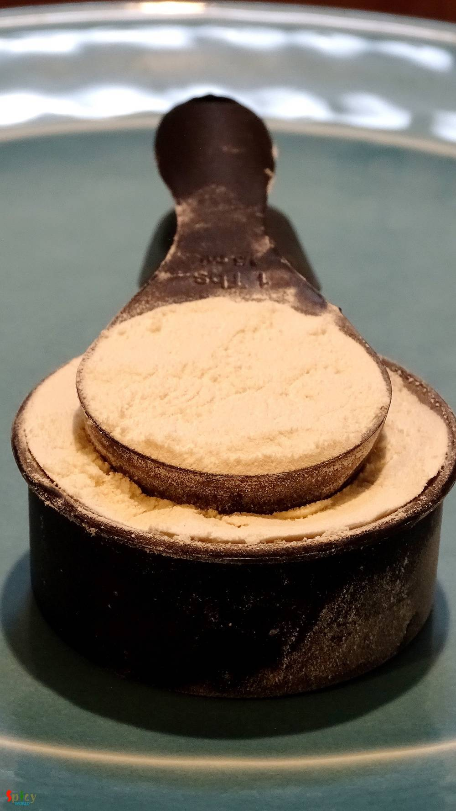
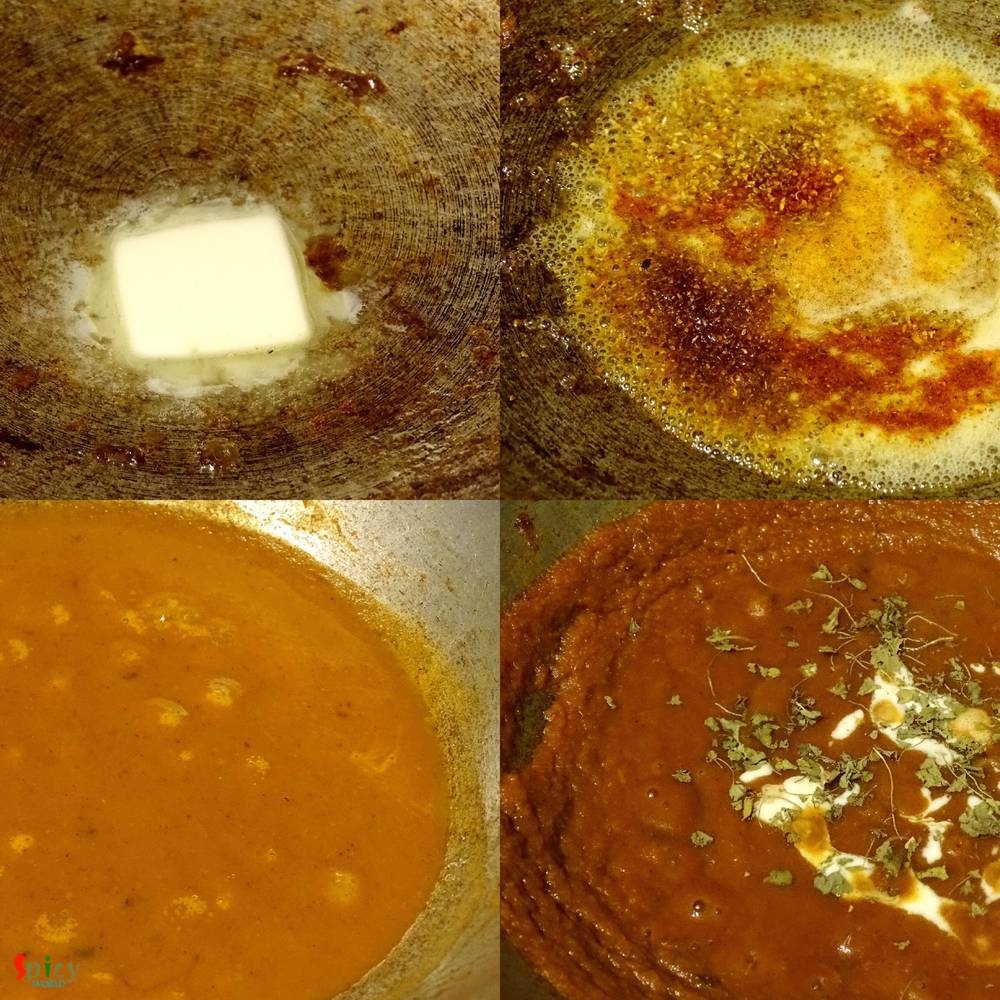

Simple and Easy Recipes
Chicken Pizza with Makhni sauce
© 2016 Spicy World, Published on: Mar 9, 2016
Ahhh, atlast I got the time to write down this particular. Made this Chicken Pizza two months ago with Makhni gravy, but the recipe is a bit long, so didn't get the time to write in one sitting. Finally I am posting the delicious pizza recipe. The main attraction here is the sauce which is makhni gravy. I know that we all are a big fan of 'murg makhni' or 'paneer makhni', then why not try this sauce with pizza ?? This recipe will give you a very satisfying result.

Ingredients
- For Dough:
- 1 cup of all purpose flour or maida.
- 2 Teaspoons of instant yeast.
- Half Teaspoon of sugar.
- Half Teaspoon of salt.
- 2 Tablespoons of oil.
- Some italian seasoning.
- Warm water.
- For Sauce:
- 1 onion, 2 tomatoes, 2 inches of ginger and 4 cloves of garlic roughly chopped.
- 1 Tablespoon of butter.
- 2 Teaspoons of oil.
- Spice powder (Half Teaspoon of turmeric, 1 Teaspoon of red chilli, 1 Teaspoon of besan, 1 Teaspoon of coriander, Half Teaspoon of cumin and Half Teaspoon of garam masala)
- Half Teaspoon of kasuri methi.
- Salt and sugar.
- 2 Tablespoons of fresh cream.
- For Topping:
- 2 Teaspoons of oil.
- Salt and pepper.
- Cube size chicken pieces.
- Some slices of onion and capsicum.
- Lots of cheese any of your choice.

Steps
First we need to make the dough.
Take the flour in a mixing bowl.

Then add instant yeast, oil, salt, sugar and italian seasoning. Mix well.
Then gradually add warm water and start making a dough.
After that knead the dough very well for 3 minutes. It will become smooth.
Apply some oil on surface of the dough, cover it and place it in a warm place for 2 hours.
Now it's time to make the sauce.
Heat 2 Teaspoons of oil in a pan.
Add roughly chopped ginger and garlic. Saute for 30 seconds.
Add chopped onion, tomato and some salt. Cook till they all becom mushy.
Then put them in blender and make smooth paste out of it.
Again heat 1 Tablespoon of butter.
Add all the spice powder into the half melted butter.
Then add the prepared paste along with done salt and sugar. Cook this on low flame for 15 minutes.
Now add kasuri methi and fresh cream. Give it a mix and turn off the flame.
The makhni gravy is ready.

Heat 2 Teaspoons of oil in a pan. Add the cube size chicken pieces.
Sprinkle salt and pepper all over them and fry for 3 - 4 minutes.
Make 2 balls out of the dough.
Dust some flour on 1 ball and roll it to 5 - 6 inches disk.
Place it on a non stick tawa. Prick the whole base with a fork.
Then apply the sauce leaving the sides, spread cheese and arrange chicken, onion and capsicum.
Lastly spread some more grated cheese and apply some oil on all along the sides of pizza.

First place the tawa on medium heat on a stove top for 2 - 3 minutes.
You will the sides will puff up.
Then place the tawa into a preheated oven for 15 - 20 minutes in 420℉.
After that let it rest in the oven for 2 minutes more and then cut a slice.
Your chicken pizza with makhni gravy is ready ...
Enjoy this hot with some cold drinks ...
")